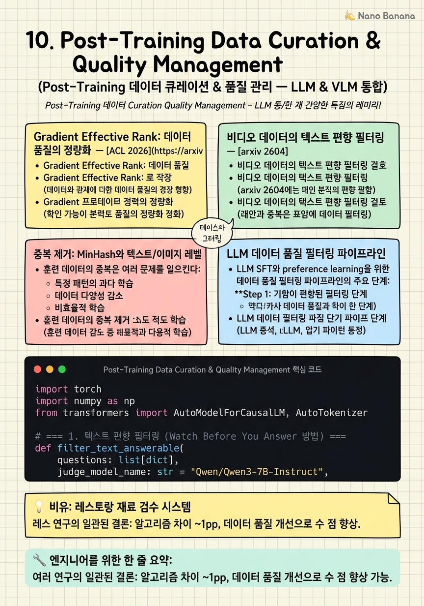

Post-Training Data Curation & Quality Management

🎯 학습 목표
- Gradient effective rank를 SVD 기반으로 계산하고 데이터 품질 지표로 해석할 수 있다
- 비디오 벤치마크의 40-60% text-only 편향 문제를 필터링하는 방법을 설명할 수 있다
- MinHash/SimHash 기반 중복 제거를 구현할 수 있다
- LLM/VLM 데이터 큐레이션 파이프라인의 주요 단계를 설계할 수 있다
- 다양성과 품질 간의 trade-off를 데이터 선택 전략으로 관리할 수 있다
'데이터 품질이 알고리즘 선택보다 중요하다'는 주장이 2025-2026년 다수의 연구에서 반복적으로 확인되었다. RLHF/DPO 방법론 간 성능 차이는 ~1pp에 불과하지만([2603.19335](https://arxiv.org/pdf/2603.19335)), 고품질 데이터로 교체하면 훨씬 큰 차이를 만들 수 있다. 이 챕터에서는 LLM과 VLM post-training을 위한 데이터 큐레이션 파이프라인을 체계적으로 다룬다.
2026년에 특히 주목할 두 가지 발전이 있다. 첫째, Gradient Effective Rank([arxiv 2504.10766](https://arxiv.org/html/2504.10766v1)): reasoning 데이터(rank 361)가 instruction 데이터(rank 153)보다 훨씬 풍부한 gradient 구조를 생성한다는 것을 SVD로 측정. 둘째, 비디오 벤치마크 텍스트 편향([arxiv 2604.05117](https://arxiv.org/abs/2604.05117)): VideoMME의 48.2%, MMVU의 57.1%가 텍스트만으로 답할 수 있는 질문. 이런 데이터로 훈련하면 모델이 시각적으로 이해하지 않고도 높은 점수를 낼 수 있는 단축키를 학습한다.
핵심 내용
Gradient Effective Rank: 데이터 품질의 정량화
[ACL 2026](https://arxiv.org/html/2504.10766v1) 논문은 SVD 기반 entropy effective rank를 사용하여 훈련 데이터의 품질을 정량화한다.
계산 방법: 훈련 배치에서 특정 레이어(Query projection)의 gradient matrix \(G \in \mathbb{R}^{d_{out} \times d_{in}}\)에 SVD를 수행한다: \[G = U\Sigma V^T, \quad \Sigma = \text{diag}(\sigma_1, \ldots, \sigma_r)\]
Normalized singular value \(\bar{\sigma}_i = \sigma_i / \sum_j \sigma_j\)에 대해 effective rank: \[\rho(G) = \exp\left(-\sum_i \bar{\sigma}_i \log \bar{\sigma}_i\right)\]
이 값이 높을수록 gradient가 더 다양한 방향으로 분산되어 더 풍부한 학습 신호를 제공한다.
실용적 의미: 같은 예산으로 데이터를 선택할 때 gradient rank가 높은 데이터를 우선 선택한다. Reasoning 데이터(수학, 코딩)는 rank ~361, 단순 instruction-following은 rank ~153. 데이터 혼합 비율 결정에 이 지표를 활용할 수 있다.
비디오 데이터의 텍스트 편향 필터링
[arxiv 2604.05117](https://arxiv.org/abs/2604.05117) 'Watch Before You Answer'(April 2026)은 비디오 post-training 데이터의 심각한 문제를 지적한다: 40-60%의 질문이 비디오를 보지 않고도 텍스트만으로 답할 수 있다.
측정 방법: GPT-5와 Gemini-3.1-Pro에게 비디오 없이 텍스트만으로 질문에 답하게 했을 때, VideoMME에서 48.2%, MMVU에서 57.1%를 맞췄다. 이런 데이터로 훈련하면 모델이 시각적 이해 없이 언어 패턴으로 답하는 것을 강화한다.
필터링 방법:
1. 비디오 없이 텍스트만으로 LLM에게 질문 2. LLM이 높은 확신으로 답하면 '텍스트로 해결 가능' → 제거 3. LLM이 확신이 없으면 '시각적 이해 필요' → 보존
결과: 263,071 샘플에서 181,710 샘플(69.1%)을 보존하면서 다양한 frame count에서 4.8-6.2점 개선.
중복 제거: MinHash와 텍스트/이미지 레벨
훈련 데이터의 중복은 여러 문제를 일으킨다: 특정 패턴의 과다 학습, 데이터 다양성 감소, 비효율적 학습. 텍스트와 이미지/비디오 중복을 별도로 처리해야 한다.
텍스트 레벨 중복 제거 (MinHash LSH):
`python
from datasketch import MinHash, MinHashLSH
def text_to_minhash(text, num_perm=128):
m = MinHash(num_perm=num_perm)
words = set(text.lower().split())
for word in words:
m.update(word.encode('utf8'))
return m
`
Jaccard similarity > 0.8이면 중복으로 판단하여 제거. 대규모(수백만 샘플)에서 O(n)으로 효율적.
이미지 레벨 중복 제거: Perceptual hash (pHash) 또는 CLIP embedding 코사인 유사도로 시각적 중복 제거. 동일 이미지에 다른 질문이 있는 경우는 유지한다.
비디오 레벨: 같은 소스 비디오에서 추출된 클립을 과도하게 포함하지 않도록 source-level subsampling. 예: 같은 영화에서 최대 N개 클립만 허용.
LLM 데이터 품질 필터링 파이프라인
LLM SFT와 preference learning을 위한 데이터 품질 필터링 파이프라인의 주요 단계:
Step 1: 기본 필터 - 최소/최대 길이 필터 (너무 짧거나 너무 긴 응답 제거) - 반복 패턴 제거 (같은 구문이 N회 이상 반복되는 응답) - 특수문자 과다 사용 제거 (스팸성 콘텐츠)
Step 2: 품질 모델 - Perplexity 기반 필터: 모델이 낮은 perplexity로 처리하는 응답은 너무 단순하거나 이미 잘 알고 있는 내용 - Classifier 기반: 훈련된 품질 분류기로 high/low quality 레이블 - LLM-as-judge: GPT-4o 등으로 응답 품질을 자동 채점
Step 3: 다양성 확보 - Instruction 유형 분류 후 각 유형별 샘플링 - Embedding cluster 기반 다양성 샘플링 - 어려운 샘플 우선 선택 (모델이 틀리는 케이스)
Step 4: Gradient Rank 기반 선택 (선택적) - 소규모 배치 실험으로 데이터 소스별 gradient rank 측정 - Rank가 낮은 소스의 비율 줄이기
VLM 데이터 큐레이션의 고유한 도전
VLM 데이터는 텍스트와 달리 시각 정보의 품질도 관리해야 한다.
이미지/비디오 품질 필터:
- 해상도: 최소 224×224 이상 (너무 작으면 visual detail 부족) - 선명도: Laplacian variance로 blur 탐지 (임계값 100 미만 제거) - 밝기: 너무 어둡거나(< 30) 너무 밝은(> 225) 이미지 제거
시각-텍스트 alignment 품질:
- CLIP score: 이미지와 캡션의 cosine similarity (0.2 이상 보존) - 이미지에 없는 내용을 설명하는 텍스트 제거 (visual hallucination 방지)
비디오 특화 필터:
- 정적 비디오 제거: 연속 프레임 간 MSE가 임계값 이하이면 거의 움직임 없는 정적 비디오 - 화면 녹화/슬라이드 제거: 자연 동작보다 텍스트/슬라이드가 주를 이루는 비디오 - 음악 비디오/애니메이션: 실사 비디오와 다른 분포이므로 별도 처리
Annotation 일관성 필터:
`python
def check_annotation_consistency(annotations):
# 같은 비디오 구간에 모순된 설명이 있는지 확인
# 타임스탬프가 비디오 duration을 초과하는지 확인
# IoU 일치도를 multi-annotator 데이터에서 계산
pass
`
💡 비유로 이해하기
데이터 큐레이션은 셰프가 최고의 요리를 만들기 위해 재료를 엄선하는 과정이다. 아무리 뛰어난 조리 기술(알고리즘)이 있어도 재료(데이터)가 나쁘면 맛있는 요리를 만들 수 없다. 이것이 '데이터 품질 > 알고리즘 선택'이라는 발견의 직관이다.
Gradient effective rank는 재료의 '영양 밀도'와 같다. 같은 100g이라도 고기(rank 361)와 물(rank 153)은 영양 밀도가 다르다. 텍스트 편향 필터링은 '보기엔 좋아 보이지만 실제로는 영양이 없는' 재료를 걸러내는 것이다 — 비디오처럼 보이지만 텍스트만 읽어도 답할 수 있는 데이터.
중복 제거는 같은 재료를 100kg씩 사는 것을 막는 것이다. 다양한 식재료 조합이 다채로운 영양을 제공하듯, 다양한 데이터 분포가 모델의 일반 능력을 향상시킨다.
💻 코드 예시
비디오 post-training 데이터에서 텍스트 편향을 필터링하는 파이프라인과, gradient effective rank를 계산하는 유틸리티를 보여준다.
import torch
import numpy as np
from transformers import AutoModelForCausalLM, AutoTokenizer
# === 1. 텍스트 편향 필터링 (Watch Before You Answer 방법) ===
def filter_text_answerable(
questions: list[dict],
judge_model_name: str = "Qwen/Qwen3-7B-Instruct",
confidence_threshold: float = 0.8,
) -> list[dict]:
"""비디오 없이 텍스트만으로 답 가능한 질문 필터링"""
tokenizer = AutoTokenizer.from_pretrained(judge_model_name)
judge = AutoModelForCausalLM.from_pretrained(
judge_model_name, torch_dtype=torch.bfloat16, device_map="auto"
)
filtered = []
for item in questions:
# 비디오 없이 텍스트만으로 프롬프트 구성
prompt = f"다음 질문에 답하세요 (비디오 없이): {item['question']}\n"
prompt += f"선택지: {item.get('options', '')}"
# 모델 confidence 측정
inputs = tokenizer(prompt, return_tensors="pt").to(judge.device)
with torch.no_grad():
out = judge(**inputs)
log_probs = torch.log_softmax(out.logits[:, -1], dim=-1)
# top-1 token의 confidence
max_prob = torch.exp(log_probs.max()).item()
if max_prob < confidence_threshold: # 낮은 confidence = 시각 필요
filtered.append(item)
return filtered
# === 2. Gradient Effective Rank 계산 ===
def compute_gradient_effective_rank(model, dataloader, layer_name: str) -> float:
"""특정 레이어의 gradient matrix에 대한 effective rank 계산"""
gradients = []
model.train()
for batch in dataloader:
model.zero_grad()
loss = model(**batch).loss
loss.backward()
# 특정 레이어의 gradient 수집
for name, param in model.named_parameters():
if layer_name in name and param.grad is not None:
gradients.append(param.grad.detach().cpu().float())
break
if len(gradients) >= 100: # 100 배치로 추정
break
G = torch.stack(gradients).mean(0) # 평균 gradient matrix
# SVD로 effective rank 계산
_, S, _ = torch.svd(G)
S_norm = S / S.sum() # 정규화
entropy = -(S_norm * torch.log(S_norm + 1e-10)).sum()
return torch.exp(entropy).item()
# 사용: reasoning vs instruction 데이터 비교
# rank_reasoning = compute_gradient_effective_rank(model, reasoning_loader, 'q_proj')
# rank_instruction = compute_gradient_effective_rank(model, instruction_loader, 'q_proj')
# print(f"Reasoning rank: {rank_reasoning:.1f}, Instruction rank: {rank_instruction:.1f}")filter_text_answerable는 judge LLM(Qwen3-7B)에게 비디오 없이 질문에 답하게 하여 confidence가 높으면(0.8 이상) 시각이 필요 없는 질문으로 판단하고 제거한다. compute_gradient_effective_rank는 여러 배치의 gradient를 평균하여 SVD를 수행하고 Shannon entropy 기반 rank를 계산한다. 값이 높을수록 gradient가 다양한 방향으로 분산되어 더 풍부한 학습이 이루어진다.
🏭 현업에서의 평가
✅ 시니어가 보는 것
- 비디오 텍스트 편향 문제를 인식하고 필터링 방법을 제시하는 능력
- Gradient effective rank를 데이터 선택 의사결정에 연결하는 능력
- 중복 제거 방법을 대규모에서 효율적으로 구현하는 경험
- VLM 데이터 품질 지표(CLIP score, blur 탐지 등)를 파이프라인에 통합한 경험
⚠️ 레드 플래그
- 데이터 큐레이션 없이 웹에서 크롤링한 데이터를 그대로 사용하는 경우
- 텍스트 편향 문제를 인식하지 못하고 VQA 데이터를 무분별하게 훈련에 사용하는 경우
- 중복 제거 없이 대규모 데이터로 훈련하는 경우
- 품질 필터 파라미터를 임의로 선택하고 ablation을 수행하지 않는 경우
🎤 예상 인터뷰 질문
- 비디오 post-training 데이터에서 텍스트 편향 문제를 발견한 경험이 있나요? 어떻게 탐지하고 처리했나요?
- Gradient effective rank를 실제 데이터 선택에 사용한다면 어떤 파이프라인을 설계하겠나요?
- 수백만 개의 비디오 클립에서 중복을 제거하는 확장 가능한 방법을 설명해주세요.
✨ 핵심 요약
데이터 품질 > 알고리즘 선택
여러 연구의 일관된 결론: 알고리즘 차이 ~1pp, 데이터 품질 개선으로 수 점 향상 가능.
Reasoning rank 361 > Instruction rank 153
ACL 2026: SVD 기반 gradient rank로 reasoning 데이터가 instruction 데이터보다 2.4배 풍부한 gradient 구조.
비디오 데이터의 40-60%가 시각 불필요
VideoMME 48.2%, MMVU 57.1%가 텍스트만으로 답 가능. GPT-5-mini 필터링으로 69.1% 보존, 4.8-6.2점 개선.
MinHash로 텍스트 중복 제거 O(n)
Jaccard similarity 0.8 이상이면 중복. 수백만 샘플에서 효율적으로 동작.
CLIP score ≥ 0.2 = 시각-텍스트 alignment 기준
이미지와 캡션의 CLIP cosine similarity가 낮으면 annotation 품질이 의심스럽다.
Blur 탐지: Laplacian variance < 100
흐린 이미지는 visual feature 품질이 낮다. Laplacian 분산으로 자동 필터링.
Source-level subsampling으로 도메인 균형
같은 소스 비디오에서 과도한 클립을 포함하면 특정 도메인에 bias. 소스별 최대 클립 수 제한 필수.